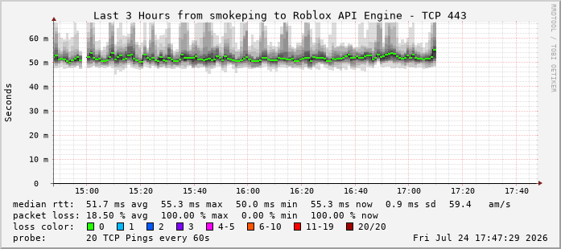
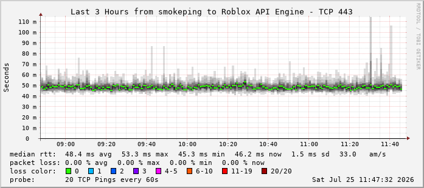

Telemetry Graphs (Last 3 Hours)
Seattle VPN Tunnel (Control A)

Measures HTTP/HTTPS latency & packet loss to Roblox API endpoints over NordVPN WireGuard. Note the flat, low-deviation lines showing consistent connections.
Raw GCI Native (Control B)

Measures identical HTTP/HTTPS handshakes bypassing the VPN client directly over GCI Alaska. Note the heavy vertical smoke and red blocks indicating severe packet drop and timeouts.